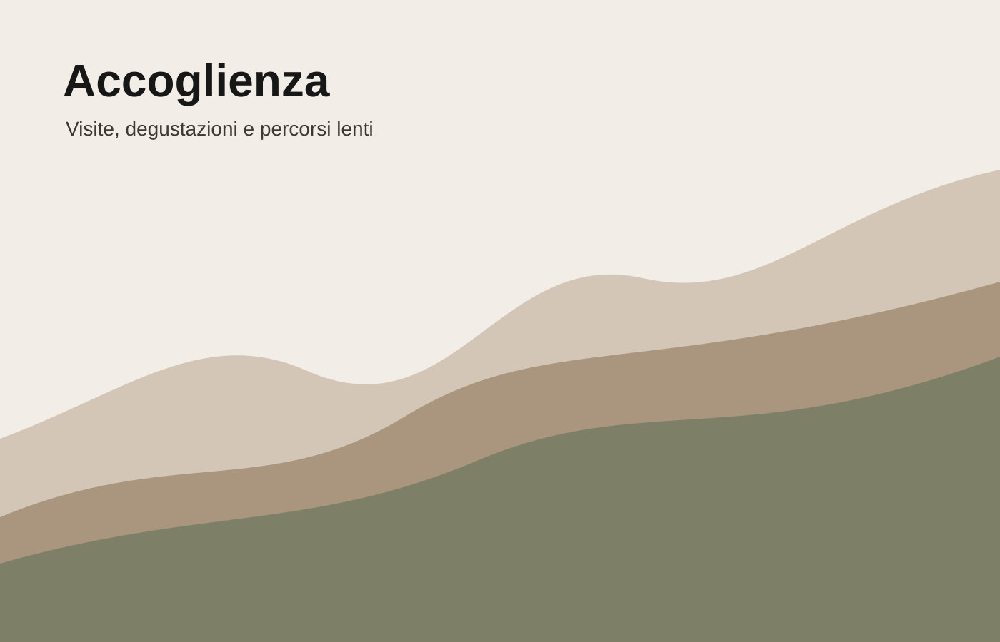

Contatti
Una strada da percorrere lentamente.
Stracrösa può vivere come sito, segnaletica, etichette, mappe pieghevoli e materiali per degustazioni. Il digitale è il punto d’ingresso all’esperienza.

Informazioni e visite
Percorsi su prenotazione, degustazioni in cantina e proposte stagionali tra vigneti e borghi.
STRACRÖSA
La strada del vino
Email
info@stracrosa.it
Instagram
@stracrosa
Territorio
Colline pavesi